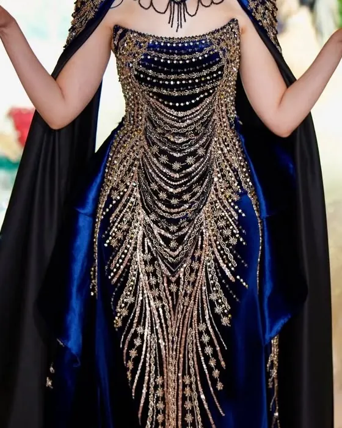
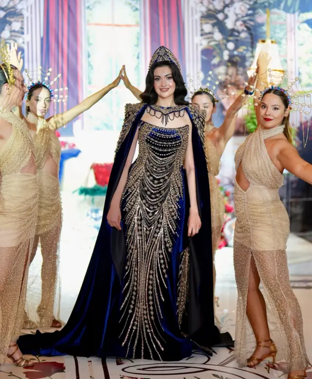

II · Kına gecesi · Kiralık
Lacivert kaftan
Lacivert kadife, altın tonlu boncuk ve taş işleme, siyah saten pelerin ve taç.

Özel elişleme
Kadife ışığı yutar, altın işleme geri verir.
Boncuk dizileri omuzlardan başlayıp gövdede sıklaşıyor, eteğe doğru ince ışık çizgileri gibi uzuyor. Pelerin hareket ettikçe altın, laciverdin içinden yeniden görünüyor.
- Kumaş
- Lacivert kadife
- İşleme
- Altın tonlu boncuk ve taş
- Tamamlayıcı
- Saten pelerin, taç
- Gece
- Kına
- Seçenek
- Kiralık
“Kınanın zarafeti, Büşra gelinimizin güzelliğiyle bambaşka.”

Aynı geceden
Diğer kaftanlar

Gümüş saçakSiyah kadife

Altın sırmaSiyah kadife

Gümüş başlıklıKına sahnesi

Bordo ışıltıKına elbisesi